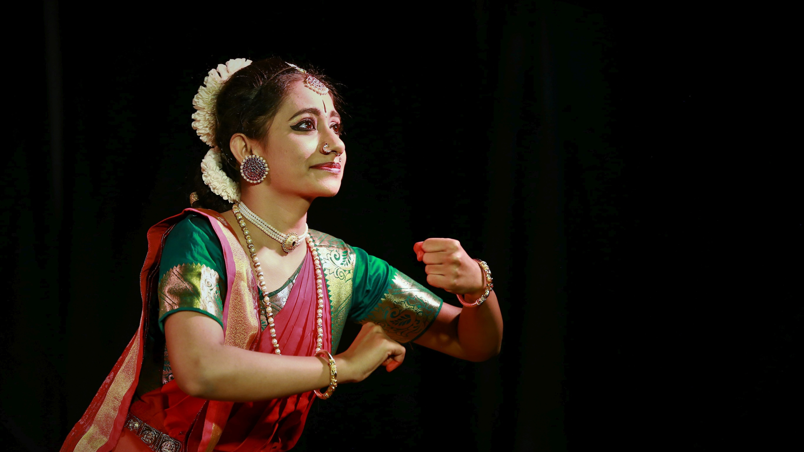

A classical dance from Tamil Nadu known for its geometric precision, expressive abhinaya, and devotional roots in temple rituals.A gentle, swaying dance from Kerala, Mohiniyattam emphasizes lasya (grace) and the portrayal of feminine beauty and emotion.Kathakali is a vibrant classical dance-drama from Kerala known for its elaborate costumes, bold makeup, and powerful storytelling through expressive gestures and facial movements.This lyrical dance from Odisha is defined by fluid torso movements, sculptural poses, and devotion to Jagannath.Blending drama and dance, Kuchipudi from Andhra Pradesh includes spoken word, rhythmic footwork, and mythological storytelling.Rooted in the monastic traditions of Assam, Sattriya is a devotional dance characterized by spiritual themes and refined movements.Kathakali, Mohiniyattam, and Bharatanatyam dancers celebrate the art and tradition of classical dance.A vibrant folk dance from Gujarat that celebrates the joyful spirit of community through rhythmic stick movements and lively group formations.With swift pirouettes and intricate footwork, Kathak dancers embody grace shaped by both temples and courts.